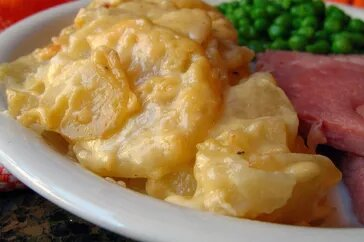

Creamy au Gratin Potatoes

Description
These au gratin potatoes are my husband's favorite — he considers it a special occasion every time I make them!
The creamy cheese sauce and tender potatoes in this classic French dish make a delicious flavor combination.
Serve potatoes au gratin with a roast pork loin or beef tenderloin, alongside a green salad.
Ingredients
- Potatoes
- Onion
- Seasonings
- Butter
- Flour
- Milk
- Cheese
Steps
-
Assemble the casserole: Layer half of the potatoes in the bottom of the prepared baking dish. Season. Layer
onion slices over top, then top with remaining potatoes. Season again.
-
Make the sauce: Melt the butter in a saucepan. Gradually whisk in flour and salt and cook for about 1
minute. Gradually whisk in the milk. Cook, whisking constantly, until the mixture has thickened. Stir in the
cheese.
-
Bake the casserole: Pour the sauce over the potatoes. Cover the dish with foil and bake in the preheated
oven until the potatoes are tender and the sauce is bubbling.